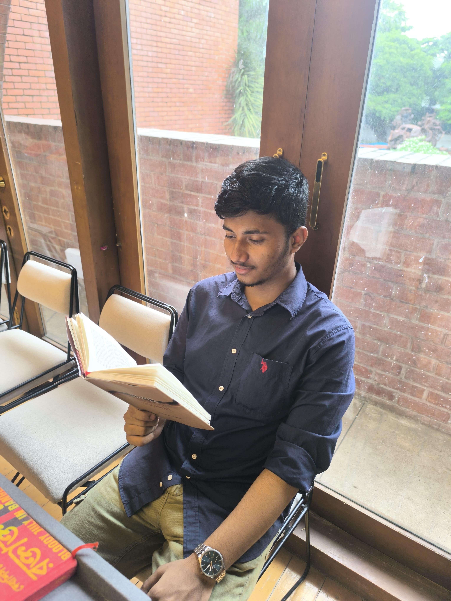

Mission July 36

.
Short reflections on faith, solitude, society, and the quiet weight of thinking differently.

.
বিশাল এক সমুদ্রের মাঝে একা দাঁড়িয়ে আছে একটি বাতিঘর। রাত হলে সে নিজের বুক চিরে আলো জ্বালায়, যাতে দূরদেশের জাহাজগুলো পথ না হারায়। কিন্তু অদ্ভুত ব্যাপার হলো, সে যত বেশি মানুষের উপকারে আলো দেয়, তীরের মানুষগুলো তত বেশি তার ওপর বিরক্ত হয়।
বাতিঘরটি যে মাটির ওপর দাঁড়িয়ে আছে, সেই মাটিই যেন তার সবচেয়ে বড় কষ্টের জায়গা। পরিবারের মতো আগলে রাখা সেই দেয়ালগুলোই তাকে সারাক্ষণ চেপে ধরে রাখে। এক অসহ্য নীরব যন্ত্রণা সে বুকের ভেতর বয়ে বেড়ায়, কিন্তু পাথর দিয়ে গড়া শরীর বলে সেই আর্তনাদ সে কাউকে শোনাতে পারে না।
তার বুকের ভেতর সবসময় একটা অজানা ভয় কাজ করে। অন্ধকার বাড়লে তার মনে হয়, একদিন হয়তো তার এই আলো আর জ্বলবে না। তখন কেউ তাকে মনে রাখবে না, কেউ তাকে খুঁজতেও আসবে না।
কখনো কখনো ঝড়ের সময় কিছু ছোট নৌকা খুব মায়া নিয়ে তার কাছে আসতে চায়। বাতিঘর তাদের আলো দিয়ে পথ দেখায়, কিন্তু খুব বেশি কাছে আসতে দেয় না। কারণ সে জানে, তার চারপাশের পাথরগুলো বড্ড ধারালো। তাই সে তাদের এমনভাবে আলো ফেলে দেয় যাতে তারা নিরাপদে দূরে সরে যেতে পারে।
এইভাবেই দিন যায়, রাত যায়। সমুদ্র বদলায়, ঝড় আসে, আবার শান্ত হয়। শুধু বাতিঘরটি তার নিঃসঙ্গ আলো নিয়ে একাই দাঁড়িয়ে থাকে।